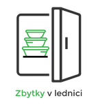

<div class="header">
  <div class="header-relative">
    <h1 class="logo">
      
    </h1>
    <button *ngIf="!userService.loggedIn()" mat-raised-button color="primary" (click)="openLoginDialog()"
      class="login ui button">
      Přihlášení/Registrace
    </button>
    <div class="corner-btns">
      <button *ngIf="userService.loggedIn()" mat-raised-button class="logout" color="primary" routerLink="/profile"
        routerLinkActive="active">
        Profil
      </button>
      <button *ngIf="userService.loggedIn()" mat-raised-button color="primary" class="logout" (click)="logoutUser()">
        Odhlásit se
      </button>

    </div>
  </div>
</div>